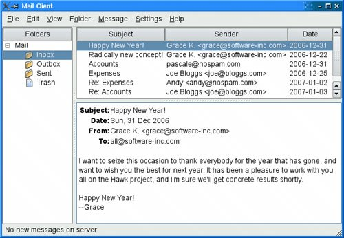

SplittersA QSplitter is a widget that contains other widgets. The widgets in a splitter are separated by splitter handles. Users can change the sizes of a splitter's child widgets by dragging the handles. Splitters can often be used as an alternative to layout managers, to give more control to the user. The child widgets of a QSplitter are automatically placed side by side (or one below the other) in the order in which they are created, with splitter bars between adjacent widgets. Here's the code for creating the window depicted in Figure 6.7:
int main(int argc, char *argv[])
{
QApplication app(argc, argv);
QTextEdit *editor1 = new QTextEdit;
QTextEdit *editor2 = new QTextEdit;
QTextEdit *editor3 = new QTextEdit;
QSplitter splitter(Qt::Horizontal);
splitter.addWidget(editor1);
splitter.addWidget(editor2);
splitter.addWidget(editor3);
...
splitter.show();
return app.exec();
}
Figure 6.7. The Splitter applicationThe example consists of three QTextEdits laid out horizontally by a QSplitter widget. Unlike layout managers, which simply lay out a form's child widgets and have no visual representation, QSplitter inherits from QWidget and can be used like any other widget. Figure 6.8. The Splitter application's widgets
Complex layouts can be achieved by nesting horizontal and vertical QSplitters. For example, the Mail Client application shown in Figure 6.9 consists of a horizontal QSplitter that contains a vertical QSplitter on its right side. Figure 6.9. The Mail Client application on Mac OS XHere's the code in the constructor of the Mail Client application's QMainWindow subclass:
MailClient::MailClient()
{
...
rightSplitter = new QSplitter(Qt::Vertical);
rightSplitter->addWidget(messagesTreeWidget);
rightSplitter->addWidget(textEdit);
rightSplitter->setStretchFactor(1, 1);
mainSplitter = new QSplitter(Qt::Horizontal);
mainSplitter->addWidget(foldersTreeWidget);
mainSplitter->addWidget(rightSplitter);
mainSplitter->setStretchFactor(1, 1);
setCentralWidget(mainSplitter);
setWindowTitle(tr("Mail Client"));
readSettings();
}
After creating the three widgets that we want to display, we create a vertical splitter, rightSplitter, and add the two widgets we want on the right. Then we create a horizontal splitter, mainSplitter, and add the widget we want it to display on the left and rightSplitter whose widgets we want shown on the right. We make mainSplitter the QMainWindow's central widget. When the user resizes a window, QSplitter normally distributes the space so that the relative sizes of the child widgets stay the same. In the Mail Client example, we don't want this behavior; instead, we want the QtreeWidget and the QTableWidget to keep their sizes and we want to give any extra space to the QTextEdit. This is achieved by the two setStretchFactor() calls. The first argument is the 0-based index of the splitter's child widget, and the second argument is the stretch factor we want to set; the default is 0. Figure 6.10. The Mail Client's splitter indexing
The first setStretchFactor() call is on rightSplitter, and it sets the widget at position 1 (textEdit) to have a stretch factor of 1. The second setStretchFactor() call is on mainSplitter, and it sets the widget at position 1 (rightSplitter) to have a stretch factor of 1. This ensures that the textEdit will get any additional space that is available. When the application is started, QSplitter gives the child widgets appropriate sizes based on their initial sizes (or based on their size hint if no initial size is specified). We can move the splitter handles programmatically by calling QSplitter::setSizes(). The QSplitter class also provides a means of saving and restoring its state the next time the application is run. Here's the writeSettings() function that saves the Mail Client's settings:
void MailClient::writeSettings()
{
QSettings settings("Software Inc.", "Mail Client");
settings.beginGroup("mainWindow");
settings.setValue("size", size());
settings.setValue("mainSplitter", mainSplitter->saveState());
settings.setValue("rightSplitter", rightSplitter->saveState());
settings.endGroup();
}
Here's the corresponding readSettings() function:
void MailClient::readSettings()
{
QSettings settings("Software Inc.", "Mail Client");
settings.beginGroup("mainWindow");
resize(settings.value("size", QSize(480, 360)).toSize());
mainSplitter->restoreState(
settings.value("mainSplitter").toByteArray());
rightSplitter->restoreState(
settings.value("rightSplitter").toByteArray());
settings.endGroup();
}
QSplitter is fully supported by Qt Designer. To put widgets into a splitter, place the child widgets approximately in their desired positions, select them, and click Form|Lay Out Horizontally in Splitter or Form|Lay Out Vertically in Splitter. |